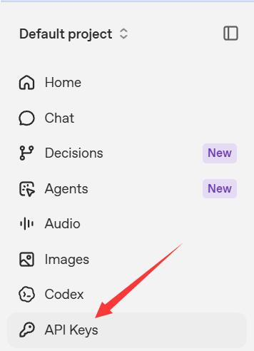
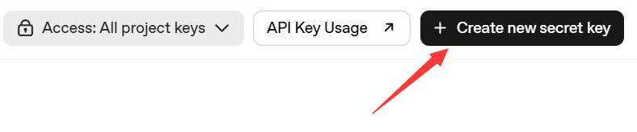
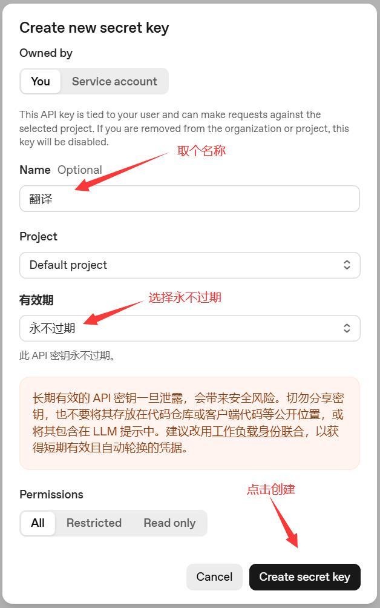
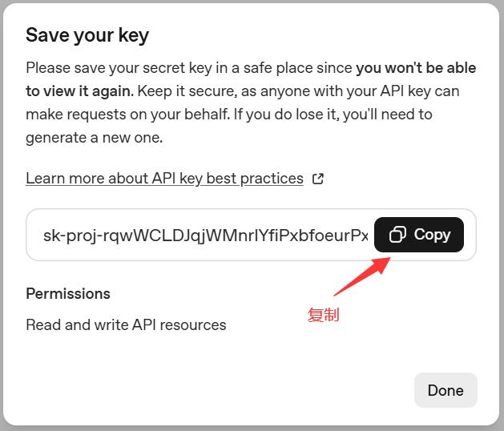
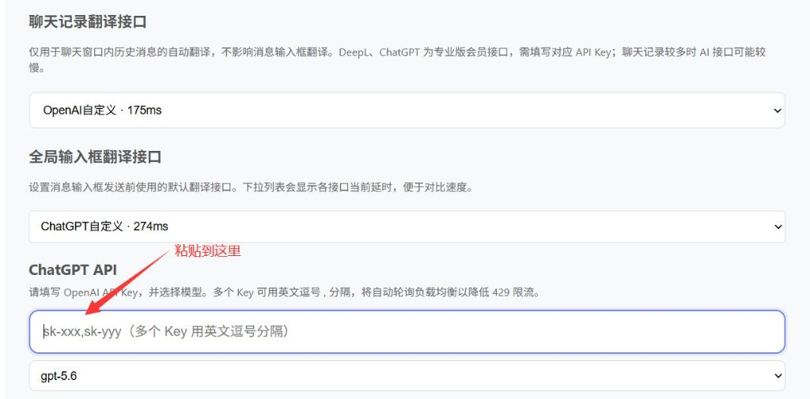
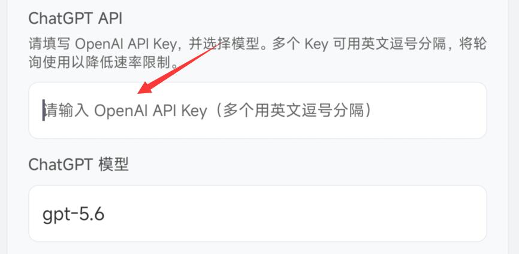

OpenAI API 申请
专业版及以上可接入 OpenAI / ChatGPT，或兼容 OpenAI 协议的第三方网关。按下列步骤申请并复制 Secret Key。
1. 打开 OpenAI 平台
访问 https://platform.openai.com/api-keys 并完成登录。
2. 进入 API Keys
在左侧菜单中点击 API Keys（如图红箭头所示）。

3. 创建新密钥
点击右上角黑色按钮 + Create new secret key。

4. 填写名称并创建
在弹窗中取一个名称（例如「翻译」），有效期建议选择 永不过期，然后点击 Create secret key。

5. 复制并妥善保存 Key
Key 仅显示一次。请立即点击 Copy 复制，保存到安全位置。 关闭后将无法再次查看完整 Key，丢失需重新创建。

提示：不要分享你的 API key，防止泄露后产生意外费用。
6. 填入 WATransChat
复制 Key 后，按您使用的端打开对应入口粘贴即可。建议在 OpenAI 后台设置用量限额，并先小额测试连通性后再日常使用。
浏览器扩展
路径：会员中心 → 翻译设置。 将「聊天记录翻译接口」和「全局输入框翻译接口」选择为 ChatGPT自定义（或 OpenAI自定义），下方会出现配置项。
- 两个接口下拉框均选择 ChatGPT自定义 / OpenAI自定义。
- 在 ChatGPT API 的 Key 输入框中粘贴刚复制的 Key（多个 Key 可用英文逗号分隔）。
- 按需选择模型后保存。

手机端
路径：会员中心 → 翻译设置 → 其它翻译接口，找到 ChatGPT 自定义 API 配置项。
- 打开 ChatGPT API 配置。
- 在「请输入 OpenAI API Key」中粘贴 Key（多个可用英文逗号分隔）。
- 在「ChatGPT 模型」中选择或填写所需模型。

注意事项
- 如果没有绑定信用卡，或是 OpenAI 5 美元额度的新用户，每分钟请求数最多约 3 次，基本无法正常使用，出错很常见。 可 点此查看你的 API 频率限制。
- OpenAI 的 API 与 ChatGPT 是两套不同的服务。WATransChat 支持的是 OpenAI API，不是网页版 ChatGPT。 因此需要开通 OpenAI 的 API 服务，而不是开通 ChatGPT Plus；开通后在设置页填写 API Key 即可。
- 出现 429 错误，说明已超出 OpenAI 的频率限制。
- OpenAI gpt-3.5-turbo 模型价格约为 $0.002 / 1K tokens。 实测翻译约 66 万英文字符花费大约 1 美元，翻译约 17 万英文字符花费大约 0.25 美元。
- WATransChat 扩展支持多个 API Key 负载均衡：填写时请用英文逗号 , 分隔不同的 Key。
还有问题？
若以上内容未能解决您的问题，欢迎联系客服获取一对一协助。